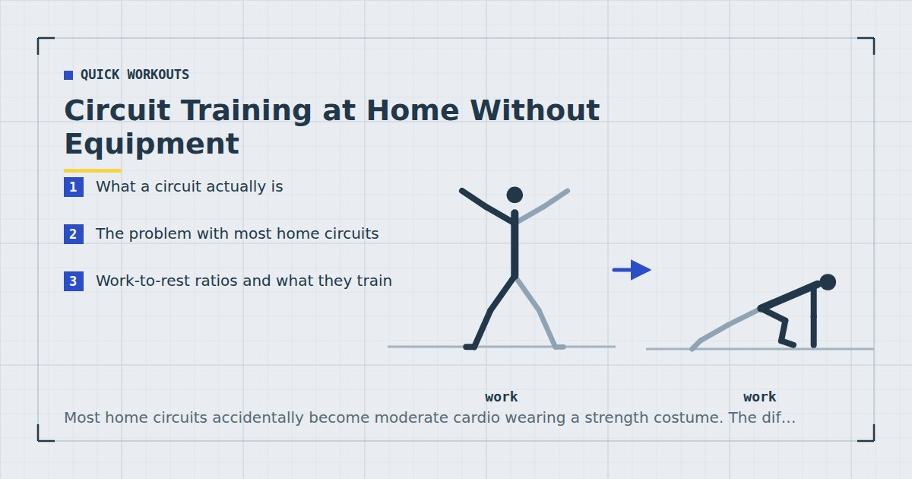

Quick Workouts & Plans
Circuit Training at Home Without Equipment
Most home circuits accidentally become moderate cardio wearing a strength costume. The difference comes down to two variables, and almost nobody sets them deliberately.

Circuit training means moving through a sequence of exercises with limited rest, then repeating. It is popular at home for good reasons: it needs no equipment, it fits a fixed time slot precisely, and it feels productive.
It also very easily becomes something other than what people intend. Understanding why requires being clear about what the format actually does.
What a circuit actually is
The defining feature is incomplete recovery. You move to the next exercise before the previous muscle group has recovered, which keeps the heart rate elevated throughout.
That has a real consequence: circuits are a conditioning format that includes resistance exercises, rather than a resistance format that happens to be fast. Both are useful. They are not interchangeable, and the difference matters if you are training for strength.
The saving grace, and the reason circuits are worth doing at all for strength purposes, is that resistance training near failure with light loads produces comparable hypertrophy to heavier loads.1 A well-built circuit can get close enough to failure on each exercise to provide a genuine strength stimulus. A badly built one cannot.
The problem with most home circuits
Two failures, and they compound.
The exercises compete with each other. A circuit of push-ups, mountain climbers, plank, burpees and tricep dips looks varied. It is five exercises all heavily taxing the shoulders, triceps and core. By the third round you are limited by fatigue in your arms rather than by the difficulty of any individual exercise, so no muscle group receives a proper stimulus and everything receives some fatigue.
The intensity ends up in the middle. Too hard to be true recovery, too fatigued to be true strength work. You finish out of breath and mildly sore, having trained neither maximal strength nor cardiovascular capacity particularly well. This is the specific reason people run home circuits for months without much changing.
If you cannot say which single quality a circuit is training, it is probably training none of them well. Decide before you start whether the session is strength work or conditioning, and set the work-to-rest ratio accordingly.
Work-to-rest ratios and what they train
| Work : rest | Trains | Use when |
|---|---|---|
| 40s : 60s | Strength, mostly | Building muscle is the goal |
| 40s : 20s | Strength endurance | General fitness, time-limited |
| 30s : 15s | Conditioning | Cardiovascular work is the goal |
| 20s : 10s | Conditioning, hard | Short, intense finishers only |
The single most useful adjustment most people can make is lengthening the rest. A 40:60 circuit feels far less impressive and produces considerably more strength adaptation than 40:20, because each work interval can be performed close to failure rather than at whatever effort your accumulated fatigue permits.
If the goal is genuinely conditioning, shorter rest is correct and the exercises should be chosen for heart rate rather than for load — the low-impact options in no-jump cardio work well.
Ordering the exercises
One rule does most of the work: consecutive exercises should not share a primary muscle group. Alternate lower body, upper body push, upper body pull, and core. That way each muscle group gets roughly three minutes of recovery while you work everything else, which is close to a proper rest period without any of the time being spent standing still.
This is the mechanism that lets a circuit deliver strength work in a short session, and it is the thing most home circuits get wrong. The broader ordering logic is covered in how to structure a home workout.
Three circuits for different goals
Strength circuit — 40s work, 60s rest, 3 rounds
Bulgarian split squat, push-up, inverted row, single-leg glute bridge, dead bug. Five exercises, alternating regions, with enough rest to make each interval genuinely hard. About twenty-five minutes.
Balanced circuit — 40s work, 20s rest, 4 rounds
Squat, push-up, reverse lunge, glute bridge, plank shoulder tap, dead bug. This is the structure used in the 15-minute full-body workout, and it is the reasonable default when you want both qualities and have limited time.
Conditioning circuit — 30s work, 15s rest, 5 rounds
Fast step-back lunge, continuous squat, push-up to shoulder tap, lateral skater step, slow mountain climber. Chosen for sustained heart rate rather than load. The apartment-friendly reasoning is in the 20-minute no-jump HIIT workout.
Progressing a circuit
Circuits are unusually hard to progress, because the obvious levers — more rounds, less rest — both push the session toward conditioning regardless of what you intended.
The better approach is to hold the structure fixed and make the exercises harder. Slow the lowering phase, elevate the feet, move to single-leg variations. Weekly volume drives growth,2 so adding a fourth round is a legitimate progression too — just be aware that it lengthens the session rather than intensifying it.
Keep the same circuit for at least six weeks. Rotating exercises weekly makes it impossible to tell whether you are improving, which removes the only feedback the format gives you.
When a circuit is the wrong choice
Circuits are so convenient that they get used for everything, including situations where a different format would clearly serve better. Three cases where they are the wrong tool.
When you are learning a hard movement. Skill acquisition and fatigue do not mix. If you are working toward a first pull-up, a pistol squat or a handstand, that practice belongs at the start of a session with full recovery between attempts, not embedded in round three of a circuit when your form has degraded. Practising a difficult movement badly, repeatedly, teaches your nervous system to do it badly. The progressions in bodyweight exercise progressions all assume fresh, deliberate practice.
When you cannot get properly close to failure. The whole case for circuits producing strength rests on each work interval approaching failure. If accumulated fatigue means your push-up interval ends because your shoulders are tired from the previous exercise rather than because your chest is done, that interval contributed fatigue without much stimulus. This is the compounding failure described above, and it is more common than people realise.
When you have to stop and start. Circuits depend on continuity for their conditioning effect, so they are a poor fit for anyone training around interruptions. Straight sets tolerate a four-minute pause almost perfectly; a circuit does not. That is exactly why the session built for parents uses sets rather than rounds.
Circuits, form and joint stress
One risk deserves stating directly rather than being left implied. Because circuits are performed under accumulating fatigue and often against a clock, they create more opportunity for form to deteriorate than straight sets do. Repetitions performed with a rounding lower back or collapsing knees are not made safe by being bodyweight only.
Two practical guards. First, treat the timer as a ceiling rather than a target: if your form breaks at twenty-five seconds of a forty-second interval, stop at twenty-five and rest. A shorter set done well is worth more than fifteen extra seconds done badly, and nothing about the format requires you to fill the time. Second, choose a variation you can hold together when tired, not the hardest one you can manage fresh. The correct push-up incline for a circuit is usually one step easier than the correct incline for straight sets.
Circuit training keeps the heart rate elevated for sustained periods. If you have a diagnosed heart condition, high blood pressure, or have been inactive for a long time, speak to your doctor before starting this format specifically. Stop if you feel chest pain or tightness, become dizzy, or notice an irregular heartbeat.
Where to go next
If you want a structured week rather than a standalone circuit, the three-day split uses straight sets instead. For short high-intensity work specifically, see EMOM workouts at home.
Frequently asked questions
Is circuit training good for building muscle?
It can be, provided each work interval is taken close to failure and consecutive exercises do not share a muscle group. Light-load training near failure produces comparable hypertrophy to heavier loads, so the limiting factor is usually the structure rather than the format.
How long should rest be in a home circuit?
Sixty seconds if strength is the goal, twenty seconds for a balanced session, and fifteen or less for conditioning. Lengthening the rest is the single most useful change most people can make to a home circuit.
What order should exercises go in a circuit?
Alternate muscle groups so consecutive exercises do not compete — lower body, upper push, upper pull, core. That gives each muscle group roughly three minutes of recovery while you work everything else.
How many rounds should a circuit be?
Three to five, depending on the work-to-rest ratio. Three rounds with long rest suits strength work; five rounds with short rest suits conditioning.
Is circuit training better than regular sets?
For time efficiency and conditioning, yes. For maximum strength development, straight sets with full rest are better. A well-ordered circuit with generous rest sits close enough to straight sets to be a reasonable compromise.
Sources and further reading
- Schoenfeld BJ, Grgic J, Ogborn D, Krieger JW. “Strength and Hypertrophy Adaptations Between Low- vs. High-Load Resistance Training: A Systematic Review and Meta-analysis.” Journal of Strength and Conditioning Research, 2017;31(12):3508–3523. PubMed.
- Schoenfeld BJ, Ogborn D, Krieger JW. “Dose-response relationship between weekly resistance training volume and increases in muscle mass: A systematic review and meta-analysis.” Journal of Sports Sciences, 2017;35(11):1073–1082. PubMed.
- Vieira AF, Umpierre D, Teodoro JL, et al. “Effects of Resistance Training Performed to Failure or Not to Failure on Muscle Strength, Hypertrophy, and Power Output: A Systematic Review With Meta-Analysis.” Journal of Strength and Conditioning Research, 2021. PubMed.
- Mayo Clinic. Exercise intensity: How to measure it.
Comments
Comments are not enabled yet. Add a hosted comment embed (Disqus, Commento, Giscus) inside this container when you are ready.